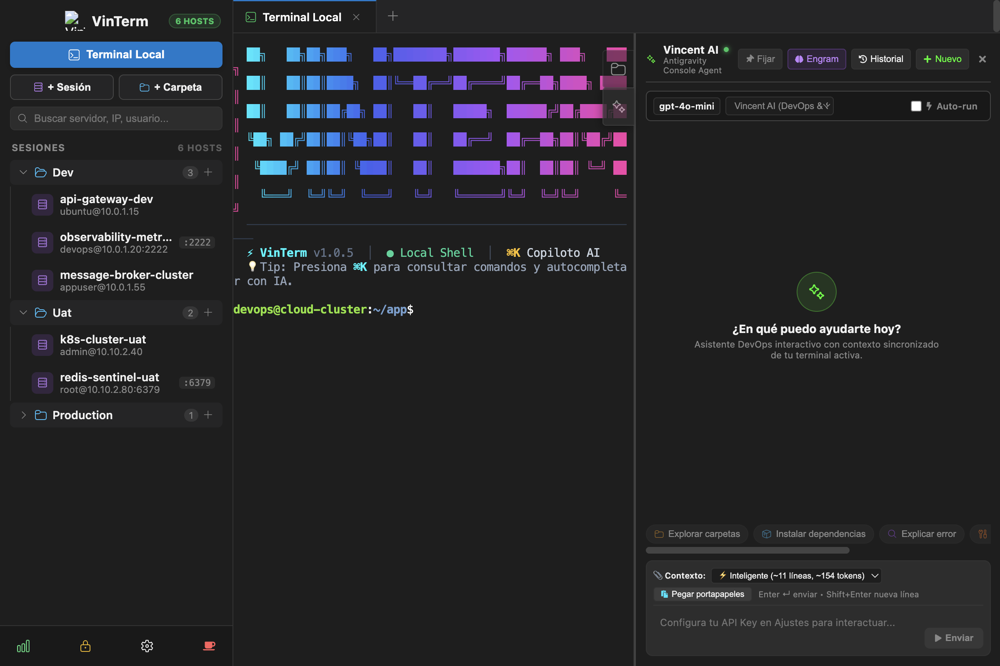

Gallery
See VinTerm in action

Experience a next-generation SSH client featuring Autonomous Vincent AI with live command execution, self-healing error correction, Gentleman security guardrails, Engram memory, AES-256 encrypted vaults, real-time server telemetry, and integrated SFTP.
Available for macOS, Windows, and Linux.

Execute commands in real time with an intelligent terminal observer. Automatic error diagnosis, missing dependency detection, and instant self-healing commands.
Heuristic pre-execution security scanner intercepts dangerous or destructive commands (like rm -rf, disk formats, and unsafe forks) before touching your server.
Native persistent memory stores server infrastructure facts, stack nuances, and operational preferences across sessions. Never repeat instructions.
Automatic documentation and server context augmentation optimizes model token usage while ensuring high-precision diagnostic and configuration prompts.
Persistent execution logs track command status, execution time, and output snippets. Inspect and export your full timeline via the UI or DevTools console.
Your passwords and private keys are never stored in plain text. VinTerm uses military-grade AES-256-GCM encryption with master passwords and auto-lock.
Real-time CPU, RAM, and Disk polling in the terminal status bar, coupled with dedicated server monitoring dashboards for full cluster visibility.
Manage files alongside your terminal. Fast upload/download queue and in-app remote file editing with the built-in Monaco code editor.
Native integration with Google Cloud Compute Engine and standard SSH. Folder hierarchies and clean session management for multi-server setups.
Refined glassmorphism interface with Vincent neon, dark, and light themes. Native macOS traffic light controls, Cmd+K quick palette, and split tabs.
Security credentials are never passed to AI models or third parties. Only sanitized terminal context is exchanged for command planning.
VinTerm is 100% open source under the MIT License. Explore our roadmap, contribute on GitHub, and support ongoing development on Ko-Fi.
See VinTerm in action